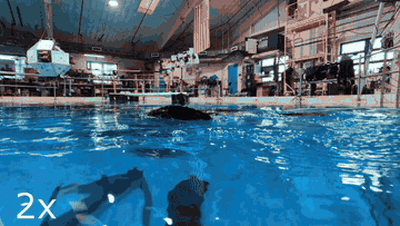
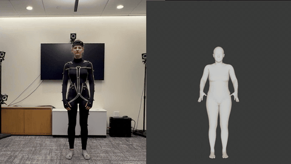
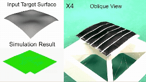
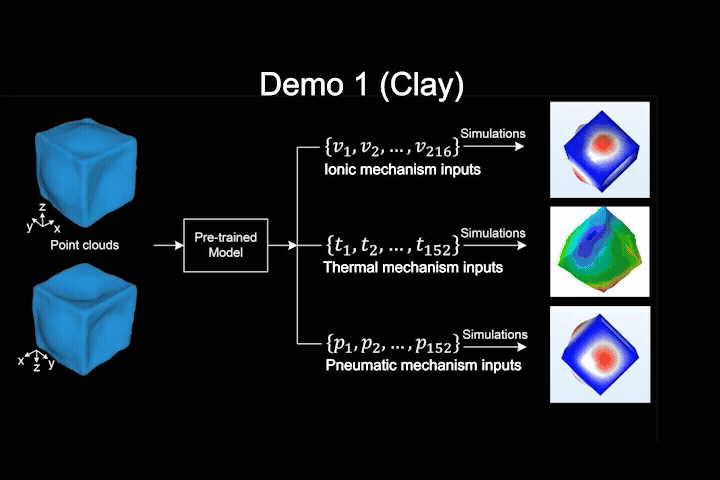
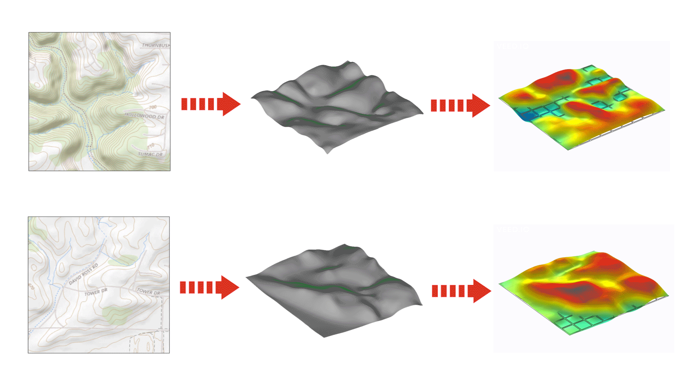
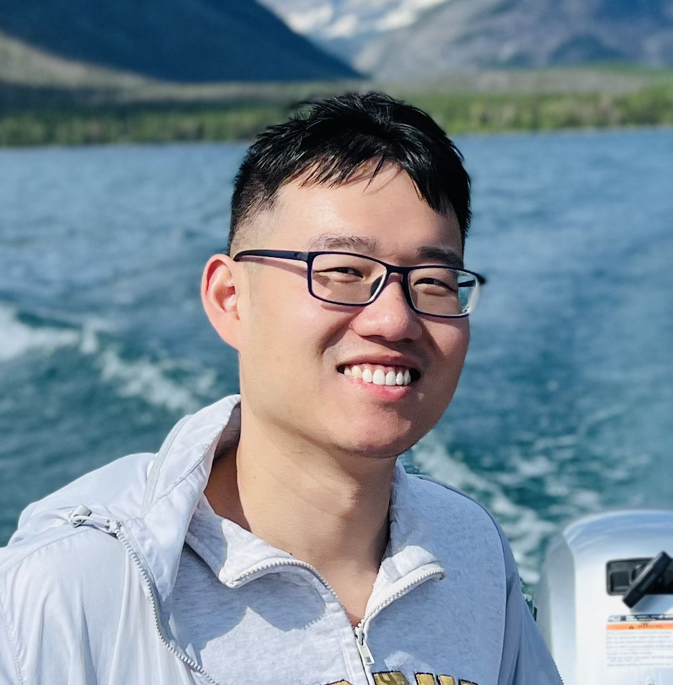

Jue's Lab designs intelligent, bio-inspired soft robotic systems — where the body actively morphs, senses, and adapts through smart structures and integrated electronics, and the brain learns, controls, and decides through AI by leveraging the intelligence of the body.
Our lab focuses on building intelligent, bio-inspired soft robotic systems by combining embodied AI, physics-informed AI, mechanical intelligence, advanced manufacturing, and flexible electronics.
More specifically, we develop soft robots with co-intelligence at both the body and brain levels: the body can actively morph, sense, and adapt through smart structures and integrated electronics, while the brain can learn, control, and make decisions through AI by leveraging the intelligence of the body.
The lab is part of the University of Tennessee, Knoxville's Foundational AI Cluster, and looks forward to new collaborations across robotics, AI, manufacturing, and bio-inspired systems.
We pursue soft robots whose physical bodies and AI brains co-evolve — spanning materials, manufacturing, electronics, modeling, and learning.
Reinforcement learning and control that exploit body dynamics for agile, robust locomotion and manipulation.
Sim-to-real and surrogate models grounded in mechanics for data-efficient, generalizable control.
Smart structures that compute, sense, and adapt — offloading intelligence into the body itself.
Array-based actuators and machine learning for universal, controllable 3D shape transformation.
3D printing and direct-ink-writing of multifunctional soft actuators, sensors, and electronics.
Integrated, fabric-embedded sensing and actuation for adaptive, wearable, and bio-integrated systems.

Amphibious robotic turtle — learned locomotion (RL + sim2real)
Calibration-free fabric wearable motion capture
Programmable shape-morphing surfaces
Machine-learning–controlled morphing
Universal 3D shape-morphing robotsThe lab is just getting started — and we're growing. Come build it with us.

Fully-funded PhD positions starting 2027. Backgrounds in robotics, ML, ME, EE, or materials are all welcome.
Apply →Motivated master's and undergraduate researchers, and visiting scholars, are welcome to reach out.
Get in touch →We are recruiting curious, driven people excited about soft robotics, embodied / physics-informed AI, and bio-inspired systems.
Fully-funded positions starting 2027. Email your CV, a short statement of interest, and (if available) transcripts.
Hands-on research in robotics, manufacturing, electronics, and AI. Reach out with your interests.
Interested in collaborating or joining as a postdoc? Let's talk.
To apply or inquire, email jw4556@princeton.edu with the subject line "Joining Jue's Lab".